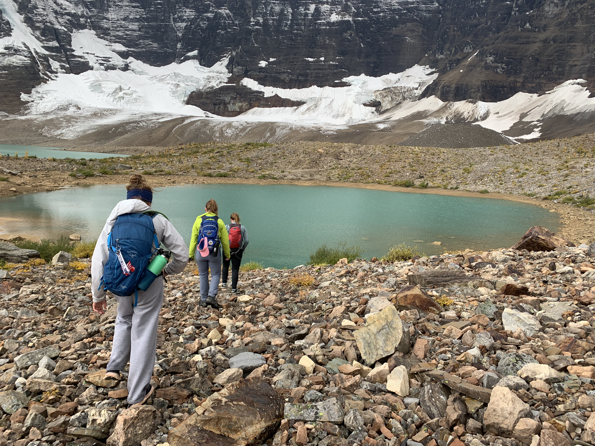

Summit Stash

This page shows some of my most recent hikes!!
My favorite hikes I've ever done were in Northern Italy, and Western Canada. The hike I completed in Italy was called Alta Via 1. This hike is located in the Dolomites (Italian Alps). I completed this trek in 7 days with my sister throughout August. This was such an amazing experience because we were able to stay in huts every night, which made the trek even more memorable. My other favorite hiking experience was in Western Canada in Banff. Banff had views like no other. The lakes were insanely blue, with such varying terrain. I would love to return to these places again in the future. Some other trips that I have been lucky enough to take were Sedona, Grand Canyon, Bryce Canyon, Zion National Park, Rocky Mountain National Park, and many more! These have all been so exciting for me because I have the right people by my side. Majority of these hikes I have had the pleasure of completing with my sister. She is the perfect hiking buddy because she is very good at the hiking prep, and is always down for an adventure. I am so grateful for all of these experiences, and I can't wait to see what the future holds in terms of hiking.
I will continue to update as I explore the world. Be back soon!
Elevation Gain by Hike
Things I Always Pack
- Plenty of water and SNACKS
- Downloaded trail map
- Layers!!
- A headlight
- my hiking boots!
Contact Me
- Email: buraks.a@northeastern.edu
- GitHub: github.com/alyburaks
- LinkedIn: linkedin.com/in/alyssaburaks